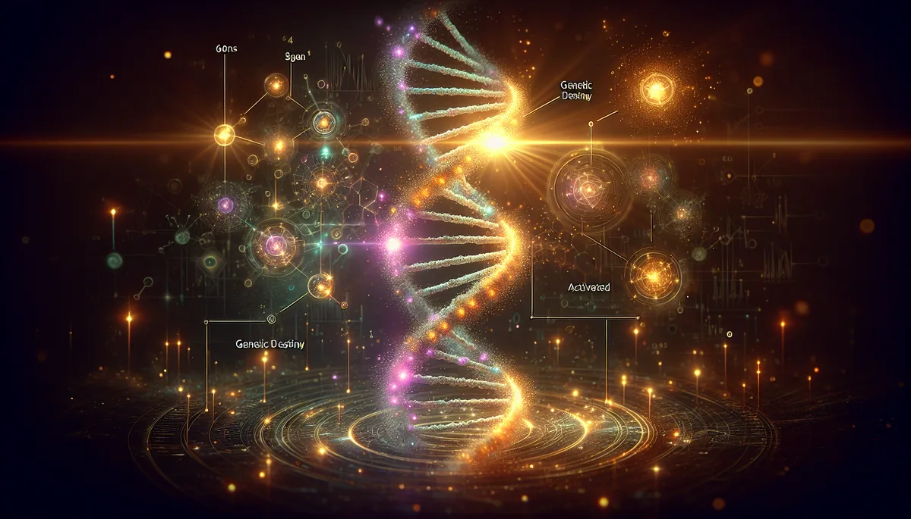

每條基因天命都有一個陰影要穿越、一份天賦要展現、一個悉地要到達。
📜 源頭脈絡
基因天命（Gene Keys）是人類圖的「下一代」。同一棵樹上長出來的不同枝幹。
Richard Rudd
Richard Rudd 是英國人，愛丁堡大學文學與形而上學碩士。年輕時花了很多年在全世界旅行（喜馬拉雅、太平洋、美洲、北極），學過泰國的氣功和冥想，還開帆船橫渡過大西洋。2006年拿過FISH國際詩歌獎。他是一個詩人型的神秘主義者。
1997年到2004年之間，Rudd 跟隨人類圖創始人 Ra Uru Hu 學習，成為人類圖的資深教師，把整套系統帶到英國，在那裡建立了學校，培養了大量學生。他是 Ra 最重要的學生之一。
但 Rudd 覺得人類圖少了什麼。人類圖是精密的機械式地圖，告訴您「您是什麼類型、用什麼策略」，但它不太談「怎麼轉化」。Rudd 想要的是一條從陰影走向光明的路徑。
2002年開始寫，2009年出版
2002年，Rudd 開始接收和書寫基因天命。這個過程花了七年。2009年，《The Gene Keys: Unlocking the Higher Purpose Hidden in Your DNA》正式出版，此後被譽為「靈性經典」。Ra Uru Hu 在2011年過世。
基因天命保留了人類圖的核心架構（64個閘門、行星啟動、出生時間計算），但完全換了一套語言和使用方式。人類圖是看圖表、分析機制、照著策略走。基因天命是沉思、冥想、讓覺察自己浮現。一個是工程師的語言，一個是詩人的語言。
64個基因天命
64個基因天命對應易經的64卦，同時也對應人類DNA的64個密碼子（Codon）。每一個基因天命都有三個層次：
陰影（Shadow）：恐懼、反應式的行為模式。是這個基因天命最低的表達方式。不是「壞」，是「還沒被看見」。
天賦（Gift）：當陰影被覺察、被接受之後，自然浮現的能力。天賦不是努力出來的，是您不再抗拒陰影之後「本來就在那裡」的東西。
悉地（Siddhi）：梵文，意思是「完美」或「成就」。這個基因天命最高的表達，通常只在極深的意識狀態裡才會展現。大部分人一生中只會在某些瞬間觸碰到悉地的邊緣。
三個層次不是階梯，而是光譜。同一個人在同一天裡，可能在某件事上展現天賦，在另一件事上掉回陰影。重點不是「爬到悉地」，是覺察自己現在在光譜的哪個位置。
金色路徑
基因天命的個人發展旅程叫「金色路徑」（Golden Path），由三個序列組成：
啟動序列（Activation Sequence）：和生命目的有關。找到您的四個核心基因天命。
金星序列（Venus Sequence）：和人際關係有關。探索愛、傷口、和親密的模式。
珍珠序列（Pearl Sequence）：和財富與服務有關。把天賦轉化為對世界的貢獻。
和人類圖的差別
人類圖告訴您「您是什麼」（類型、策略、權威）。基因天命問的是「您可以成為什麼」（從陰影走向天賦和悉地的路徑）。人類圖是地圖，基因天命是旅程。兩套系統用的是同一組64個數字，但切入的角度完全不同。
64這個數字在生物學裡不是隱喻。人類DNA的遺傳密碼確實由64種三聯體密碼子（Codon）組成。四種鹼基（A、T、C、G）每三個一組，排列組合出4×4×4=64種可能。這64種密碼子編碼了20種氨基酸加上起始和終止信號，構成了所有生命的遺傳語言。
易經有64卦。人類圖有64個閘門。基因天命有64把鑰匙。DNA有64種密碼子。這四個64是同一個數字出現在不同的系統裡。有沒有因果關係？沒有直接證據。但這個巧合（如果是巧合的話）的數學結構值得注意：6個位元的二進位制可以表達的狀態數就是2的6次方=64。易經的六爻和DNA的三聯體密碼子，底層都是用六個二元選擇（陰/陽、A-T/C-G）來編碼資訊。
三層旅程（陰影→天賦→悉地）和心理學的幾個模型有結構性對應。Maslow的需求層次理論（生存→安全→歸屬→尊重→自我實現）描述的是同一個「從基礎到超越」的上升邏輯。正向心理學的VIA品格強項研究（Peterson & Seligman, 2004）則提出每個人都有「特徵強項」（Signature Strengths），和基因天命的「天賦」概念直接呼應。
每一個基因天命的陰影，都有一支精油可以陪著它。不是消除陰影，是陪著走過去。
陰影是「恐懼」的閘門，岩蘭草的泥土沉重感像在說：害怕可以，但腳要踩穩。恐懼不會消失，踩穩的人不會被恐懼帶走。
陰影是「憤怒」的閘門，洋甘菊的微苦涼感像在那股灼熱裡潑了一小杯冷水。不是撲滅，是讓溫度降到可以思考的程度。
陰影是「冷漠」的閘門，茉莉的夜間甜香像有人在很遠的地方叫了一聲名字。不是催促，是提醒：外面還有人在等您回來。
天賦不需要精油來「啟動」。天賦是陰影被看見之後自然浮現的東西。精油的功能在前一步：幫您在陰影裡待得住，不逃、不壓、不裝沒看見。
✦ DNA有64道門。每道門後面都有一份禮物。但您得先穿過門口那團黑。精油陪您走那段路。